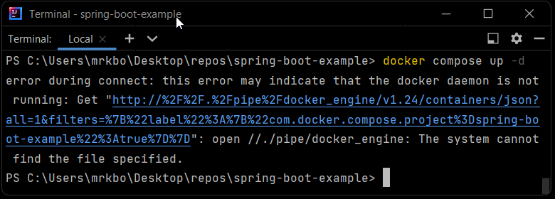

A wild computer programmer appears!
A wild computer programmer appears!
Joy in coding, and joy in writing. That's what I get from all of this.
How are you today? I'm feeling pretty good myself. It's late Saturday morning for me, I got a fairly good nights sleep, which is rare seeing as I usually sleep during the mornings. I've been working on the rewrite of Taskmin for about two weeks now, usually about 30 minutes to an hour a day. I think I'm about half done, and it's starting to shape up. It's good to see something I've put a lot of work into already finally become something tangible. In light of my recent progress I've made the repository public and it can be found here on Github. I'm planning to work on this project until it is done. So far it's going well, I've spun up an ASCII banner for it, the main menu selection is working, and I've started to work and gain ground on the list operator. More work is needed in the list section, but I'm happy with what I've got so far. My console is an implementation of the menu from my original capstone. It allows you to display a menu of options pulled in from a String array, and by making that string array within each class that will call the command line, I can display different menus without having to rewrite the functionality of the command line, which leaves it's purpose as simple as accepting user input.
This also has the bonus of encapsulating the entirity of any work done on the Task list within it's on "sub app." My hope is that when the List operator is closed and the user returns to the main menu, the list object will be destroyed. And should the user decide to create a new list, it will not be populated with the data from the previous list. This was an issue I faced in my original Taskmin and was not able to overcome. The takeaway from the old version has been to not get ahead of myself, and to try and focus on one thing at a time. It's my hope that I'll have time to work on it more this evening, but we'll see what happens.
It's been a snowy, busy week. My morning coffee time has been spent on a good solid block of work. I'm looking at my Github squares feeling accomplished. I've managed to get at least one thing done and committed just about every day for two solid weeks. For me that's a lot of `W`s. I also heard out loud recently from a team member who said they liked the blog, and that's great to hear as well. So I want to say for now if you've been reading my blog, or liking my posts I just want to say I appreciate you, and thank you for being there. I hope you have a good weekend.
No coding today unfortunately. But I had a phone interview about a hopeful opportunity. I also met my job application goal for the month. I should really keep applying to atleast one a day. But I also want to be able to focus on coding. Tomorrow is the my next Professional Squad as a teaching assistant for Merit America. It's so interesting being behind the curtains a bit. But we're talking about imposter syndrome. Which is a topic I'm excited about, because I've had to do a lot of overcoming it these past few years. And now I must go. Hope you have a good day.
I've had a pretty solid weeks work of building on my task list application. This is a ground up rewrite of Taskmin. I put that together over the course of about 2 weeks back in Bootcamp. But eventually ran out of consistent time to work on it, thus the code sat, and because I didn't document anything, and then I forgot what everything that I wrote does. Rather than try to refactor things, I decided to rethink, redesign, and redo. I think it's working very well so far.
I've managed to write a Task object, a ToDoList object which includes a list of said tasks. I've built a rudimentary command line interface, however the user runtime is not set up yet. I still have file management to work through as well. But I'm not trying to put any deadlines on myself just yet. I will get there at a healthy pace, and perhaps this week I will be able to finish it. The repository I'm currently writing this in is still private, and when I get closer to what feels to me like a 1.0 I'll release it.
Trying to code on multiple projects at once is like trying to carry a stack of plates. The more plates on the stack the harder it is to carry. Once I finish this product, one less plate on the stack, and I can start trying to remove the next plate. I'm looking forward to playing around with Spring Boot 3 more and also learning more about JWT, Security, and Authentication. I had a short dabble with it about a month ago, and had to shift focus a bit.
Anyways, it's Sunday morning. I start this week off satisfied with myself, and confident in the work I've done. I hope you have a good week.
I don't have a lot today. I want to take a moment to think about my potential first role. I'm really looking forward to being in this industry full time. One thing I've learned is there are several areas where I could see myself thriving. Technical translation and documentation is like a drug to me. I'm very interested in the application security side of things, and coding in general just brings me joy. I've done a little looking into the DevOps side of things too, and facilitating environments looks fun to me as well. I think if I simply had a role in this field I'd be happy.
I wrote a proper-ish Readme for my task app as well as a Changelog. And I think I need to set up a Template file for both of those things to pull in on new projects. I love writing, but I could clearly be saving myself some steps.
Listen, Reader, I don't have much time...
I looked at my github this weekend and realized I've got a lot of unfinished and unorganized projects. And my github landing page needs some cleaning up. So I'll be putting a little effort into that in the coming days. Utilizing ChatGPT, what a magnificent tool, I'm finally finishing a project and putting it together. I can't wait til I can talk more about it. But for now I just want to say I'm out here working towards my goals at a steady pace. Happy Valentines Day! Have a good one.
I've spent a good bit of time this week utilizing ChatGPT. I think it might have helped me solve my architecture issue with my Tasklist app that I've been neglecting for...(checks Github) 3 months now. On the subject of AI, the whole of it honestly terrifies me. I don't fully understand how capable AI is in the present day, but the language model ChatGPT is arguably an incredible tool for those who choose to use it. I've got 3 jobs applied to, I'm gonna do a few more for the night. And then I really want to try and fix this app I started while I was still in bootcamp. Hope you've had a good day.
Web Scraping seems like fun, but I have a habit of saying "yes" to anything that sounds exciting. Before I know it I've stretched myself too thin. I don't have a lot of time to code currently, so I'm trying to narrow my focus down. I've recently agreed to build a store for my missus, and that alone is a huge undertaking. I was also trying to learn Docker, however once I had learned enough to get a basic containerized Spring Boot 3 project off the ground, I didn't go any further. Can't, would love to, but can't. The ultimate goal here is still to land my first Software Development role, and to do that I have to spend time applying for jobs as well. There's already too much to try and fit in the limited amount of time I have every week.
I've started learning some Spring Security and JWT. I'll be going into Authentication as well. Application security is a more important focus for me right now, and this is keeping me in the Spring Boot neighborhood. Getting that project going was interesting. What I find odd is when I go to localhost:8080 I'm greeted with a generic login page rather than the typical whitelabel error page. I haven't figured out any of the gory details yet, but I will soon. I have a User model, and a persistent server so far. For the 30 minutes I was able to do today, it'll have to be enough.
Hope you have a good day.
I've added Bold and Underline tags to my server whitepage. Nothing special there yet, but I'm going to use
it to learn JWT.
I want to build a User Database for the team so that the Authenticated Admins can use and test their
application.
In searching through Web Scraper technology I was shown something called JSoup and HTMLUnit.
JSoup comes with a few examples, one parses Wikipedia headlines. The others say to supply a URL when I run
them,
but I haven't looked too deep into it. I want to go through the source code more and see what makes this up.
The use cases
for the team I'm working with are quite specific, and all have expressed the importance of being able to
gain specific
information.
Hailed as a "GUI-less browser for Java Programs", HTML Unit is a way to simulate a browser for testing
purposes. It has JavaScript
support. And the documentation looks thorough. I'll be spending some time looking at all of these in the
next couple of days.
Had a busy day in the real world so no real coding got done Friday. It happens. I'm making this update at
1:00am(ish). Just a little playing around tonight before bed.
So I've learned that just using Strings alone, you can kind of render HTML tags. I feel like I knew this a
bit from bootcamp, but never really tried anything with it. Until now.
So I made a couple String constants as basic HTML tags, and was able to alter the whitepage. Now instead of
an error, the server greets you. It's not much, but I think it's neat. Check it out here if you like
I'm gonna spend most of this morning hitting at my job application goals. Then I have a team meeting in the
afternoon
to discuss web scraping. Which is a topic I've had on my radar, but haven't gotten around to it yet. So I'm
looking forward to that.
But I need to get to bed before I regret how late I stayed up. Hope you all have a good day.
I've more or less finished my first dive into Spring Boot 3 now. I wrote an example server app with a CRUD
API, except I don't quite have Update(PUT) figured out yet. It is
not written to true n-tier architecture, but this was a practice run to see what's different and changed.
Plus I finally had a chance to do some work with JPA, and I got
Docker up and running despite a few hurdles of being a Windows user. I'm gonna do more or less the same
thing again over the next few days, and play a bit with what goes where.
I'd like organize the architecture into actual MVC, and see what else JPA can do. It seems easier than
writing to JDBC templates and having to write out SQL queries. Docker is
a whole different sea to jump into, but for this project it was a means to an end. Once I got through the
troubleshooting of setting it up and docker-compose worked for me, that's
where my exposure stopped.
So here's my take away for January:
Alright. The Docker issue is fixed. I went through a lot of troubleshooting to get it running right. Docker
recommends verifying that WSL2 and Windows Hypervisor(Hyper-V)
are enabled. After doing that I installed Docker Desktop. Once the install completed the application
wouldn't fully start on the desktop, nor could I run docker compose in
a terminal window. After some error hunting I found that I needed to download an updated WSL package. After
going through that I restarted my computer and it started working.
I was able to continue on finally with my Spring Boot 3 project and get the JDBC & JPA drivers set up, I
also learned how to create a database from the command line using psql
commands.
Since I spent so much time taking notes on Docker during this project I started a new KnowledgeBase repo on Github and documented the
install and troubleshoot process I went through.
This has already been a very challenging, but fun dive. Next up using JPA to create entities. But that's for
tomorrow's me. I hope you're having a good day.
So at this point I've installed Docker Desktop on my Windows 11 machine. But when I open the Desktop GUI, it
seems to be stuck in "Docker is Starting..." mode.
When I try to do a 'docker compose up -d' command in the IntelliJ terminal I'm met with this error

Not sure what it means by daemon, nor how to get Docker out of this funk. I'll likely be looking int it over
the next few hours. If you see this and you have an
easy answer for me, feel free to email me, message me on LinkedIn, or find me on other social medias. I'm
Kevin Booms practically everywhere.
In other notable events, I'm going to be on a Podcast. Don of DonTheDeveloper.tv reached out to me recently
about being a guest on his Boot Camp review episode this week. Should be a good
time. He hosts a pretty casual environment, and I'm looking forward to sharing my experience there. It also
seems I'm going to be volunteering a few hours a month to TA for Merit America.
I think it will help be a good resume builder. I'm hoping to hear more about it soon. I hope you're having a
good day.
So in trying to get this Spring Boot 3 app underway, I've had to start diving into Docker and learning about containerization. I wrote some notes in a Changelog about it and I'm hoping to get it up and running just enough to continue on with building this Spring Boot 3 app. I rejoined a group of aspiring developers that I had worked with during bootcamp to help with another project in building a social media app. It felt good to be among peers again. I had been away from a network I'd spent 8 months building for too long. I learned today that I can code HTML tags in Java, and in a browser window those tags would be properly rendered. Interesting concept for rendering a server whitepage. Whether or not it's practical remains to be seen. But it was a fun discovery for me. Hope you're having a good day.
Spring Boot 3 was released a few months ago now. It requires Java 17. I'm learning how to build an app in
this environment to implement JWT and JPA. The road continues.
I have no idea what purpose it will fulfill yet. Focus is difficult. I'm burnt out, and I've realized only
recently that I'm barely ankle deep. It's a lot. But for now I'm
trying to keep my focus on keeping the fancy github boxes green. Even if it's just for a little while a day.
I wrote a simple program today that consumes an API. This one being from myip.com, when called it will return your local IP address. I'm hoping I can build a logger that logs unique IPs to help with building an accurate "hit" counter for my website. In my head it will help keep a more accurate count of how many individual IPs make their way to the site. Fun stuff. Hope you're having a good day.
Hello out there. Happy New Year. I hope you're doing well.
I got really sick right before Christmas. I did not code for at least two weeks. I feel incredibly bad for
it.
I tried to at times. But I think my brain needed a hard reset. I instead used my headspace
to make it through the rest of the year.
I fixed some things around my house, I spent some time with my family both immediate and extended,
and once I had about 25 job applications out there I put about 30 hours into Vampire Survivors. Please
forgive me.
With the holidays over and my illness subsiding, I'm finally feeling like myself again. I'm getting
motivated again.
I'm trying to kick myself back into gear.
I've been delving through a lot of the old programs and code that I wrote during my bootcamp. Documenting what everything does, consolidating it all into one repository. It's now available on my public Github. I've been busy applying for jobs as well ofcourse, but I'm planning out a rework/refactor of my Task list application. It's important because I want to finish and use it. It just dawned on me that I wish we'd had some information on UML and modeling out applications. This would have been great to have, because I like to plan things out down to the detail. Mapping my objectives out helps me finish them faster. Oh well. To Udemy I go. I'm sure there's something there I can use. Hope you're having a good day.
I logged a few extra bugs on Taskmin. I've got some work to do that. I was able to get a Spring Boot base app up and persisting for my Item Shop, but other than get it standing I haven't really been able to work on it much more. I'm not committing it until I've had a chance to work on it more and clean up some of the code. I've taken a few days off since graduation. A lots happened between family birthdays and it's also the holiday season. I'm trying to get back in the swing of things, as I need to be ready. I've sent out about 12 applications so far, and most of it was in the past few days. I've already received one rejection, and that's fine. I only need one company to say yes and give me a chance. I'm out for the moment. Hope you have a good weekend.
HI EVERYBODY! I'M BACK! Alright let's have a recap:
So I left off just before I had started my capstone project. Now the capstone was... a lot. I focused mostly
on the backend of it however. Our project was a Tinder-like Restaurant finder.
Users would be able to search from a list of restaurants based on their area by City or Zipcode, as well as
searching by cuisine type. That was my main focus for the project, building the
API that would search through the Database. I had a lot of struggle getting it running as I basically had to
relearn the whole Server-Side API lessons from Module 2 all over again. This
isn't a bad thing. Just what I needed to get the job done. I built the API out in about two weeks, and it
was... functional at best. My API does not want to return results when searched
with all lowercase letters. I still haven't quite figured that part out yet. Nothing worth worrying about at
this point. On December 1st, the team and I presented our MVP. The presentation
of what we had went well, our coaches and advisors had good remarks for us.
But enough about that. I finished Merit America and now I'm here in the Job Success Phase. The trouble with
the Merit America course is there wasn't really time to apply the concepts I'd
learned into things that interested me. This capstone was unfortunately no different. I don't know that I
will continue to work on it. I will however take what I've learned from this course,
and build my own programs with it. And apart from applying for jobs, THAT is what I've been doing since
December 1st. Now a bit about that:
Taskmin is my personal ToDo application I've been writing since around the middle of Immersions 1 in Merit
America. The objective is a quick and responsive list generator that can save lists
and load them from .txt files. When I left that off I had a working list controller, and the program can
save and load files. However loading a file does not clear out the previously loaded
list. And the code is very very spaghetti flavored. From here I need to fix the file management, and do more
code encapsulation. I also found something called 'JColor' that allows control of
text and background color in terminal applications with Unicode. I'd love to implement that into this ToDo
app to give it a bit more personality.
The source code for Taskmin is available here: https://github.com/kbooms/Taskmin
Ultima Online (or UO) is a 26 year old Wizard game where you fight monsters, get loot, and increase your
character's power levels. Pretty standard MMO formula. Gems are part of the loot you can
find, there are nine different gems, each with their own individual value. I wrote a simple calculator
program that asks the user to enter the quantity of all different gems they possess, and
it will calculate the in-game gold value of said gems. Currently everything is entered manually, and the
program works well enough. To flesh it out, I'd like to be able to make it interactive
with the game itself somehow. If I can find anywhere in the game's file system where a log is generated I
just might be able to pull something off where all a user has to do is click a bag of gems in
the game and the program will calculate the value without manual input of each type.
You can check it out here: https://github.com/kbooms/uo-gemvalue-calc
During my time at Merit America I spent a lot of time researching projects and ideas to make for portfolio
projects. A lot of the different sources I found, suggested "make a store, and sell
fake products." A lot of the approach I've seen is to list watches or other real products with ridiculously
fake prices. And as I've already stated, if it doesn't interest me I probably won't like
doing it. However, an Item Shop from an RPG? This absolute nerd can definitely work with parameters like
that. So I'm building an RPG-like item shop. This started as a way for me to review Data Access
and the DAO pattern as well as Database design. It will eventually be a full-stack project that I'll deploy,
but for now I'm modeling it as a Terminal Client app similar to the TEnmo project from
Immersions 1.
You can see the project so far here: https://github.com/kbooms/RPGStore
Doing a layout update. A lot of my previous writing was cut and archived for now. When I figure out how to
set up an actual blog app, I'll add it back somehow for anyone interested in
the nonsensical ravings of a lunatic mind. This things been up for over a month, and I haven't really had
any time to actually get it as flashy as I had hoped to be able to. Bootcamp
just keeps me too busy. 4 more weeks and it's over. I can do anything for 4 more weeks right?
Here's what I'm planning to do once I finish bootcamp (in somewhat particular order):
Bottom line, I want a job in software development. I love coding, I love documenting, and I love the process. This is something I can see myself thriving in. In order to get a job I have to apply. It shouldn't matter to me where my skills are at the time, I've done this before, I can do it again. As long I keep trying to learn, I will be successful.
It's been over 8 weeks since I've touched Java, and though I can see the code in my head, my fundamentals are probably pretty rusty. I'll need to spend a day or two getting back up to speed on everything we went over in the first module. I built a rough task-list application based on that knowledge alone, but it's in a buggy state, and I want to finish it. I think that'd be a good personal capstone to the basics.
This is pretty much going to be the bread and butter for a minute. I need to refresh on how to write code that consumes an API as well as how to write my own APIs for consumption. This was arguably one of my favorite parts of the whole program, creating that inter-connectivity of various services. TEnmo was only the beginning.
Gotta put what I learned to use. I want to build a few API projects such as a Messenger API, and I had an idea for an API that when used would generate a random Trading card that could then be saved to a private collection. There's also a number of free public APIs that I can play around with.
I have a website in mind. I'd like to make it. I could make it with bare HTML, CSS, and some JavaScript. But maybe, just maybe, I can do it in React. Maybe not. I have have no idea how that will play out for me yet. React hasn't been the easiest to pick up, and I definitely have a long way to go before my grasp of JavaScript is firm.
I'm tired, and this bootcamp has been a long road. Only a little while longer. Anyways, I hope you're having a good day.
Tonight was our last Professional Squad, and it was quite bittersweet. We had a lot of time to share some of
our thoughts and reflections on the past 27 weeks that we've been at this. Some
of us still feel discouraged about everything, like they don't know enough or understand enough.
Resoundingly however it sounded like no one here is going to be sitting idly. This cohort is
stocked full of many dedicated learners. For a lot of us, Merit America completely reignited our love of
learning. It was certainly the push I needed to actually dedicate myself to learning
how to code. And now there's definitely no stopping me because there's so much I want to know. There's also
so much I have to relearn. I haven't worked on anything in Java for over 7 weeks
and I'm worried about forgetting everything I learned in Module 1 and 2, which was all of the Java and
Backend programming. I want to build an API, several actually. Many of my fellow
learners are hoping to get right into the field (myself included). But even if I don't wind up with a job
right away I already have my sights set on my next objectives. I've said it many
times since we rounded the third module, and it's that I'll be ecstatic to just have the time back. Being
regularly available to my life outside of code again will be a great gift to me.
React week 3 is intense. Going over state, router, props again, arrays, forms, etc. Scrimba crammed a lot
into this weeks lessons. Basically double the video length alone from the previous
two. It's going alright, and I feel as though I'm grasping it. I managed to write at least an entire static
webpage with React so I'm sure I'll grasp all of this with practice.